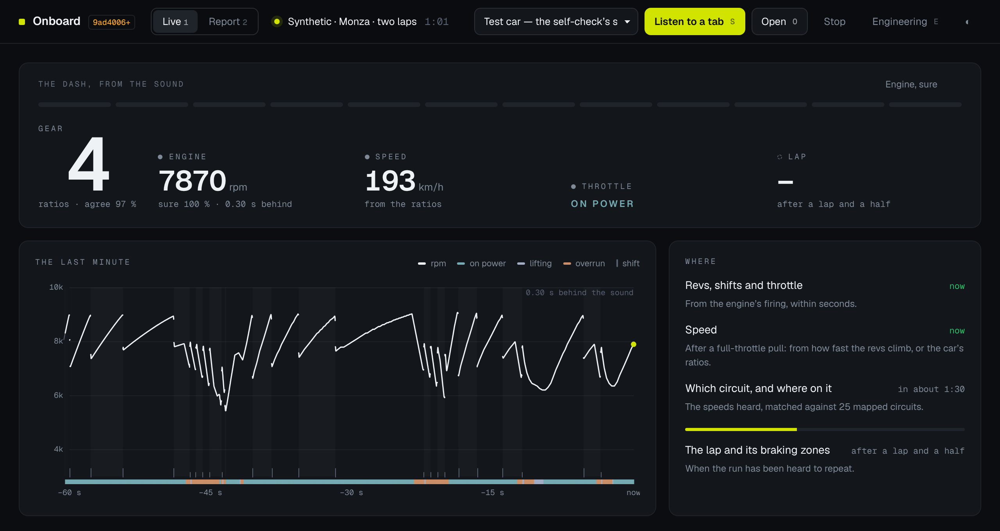

Case study · corgido · October 2026
Telemetry by ear
An AI coding agent and a sim racer built software that reads a race car’s telemetry from its onboard sound. Nobody involved was an expert in all the fields it touches. This is how its claims were made checkable anyway.
- What was built: Onboard, a browser page that listens to an onboard video playing in another tab and reads the revs, the gear changes, the throttle, the speed, the lap and the circuit from the engine’s sound alone, live.
- How well it works: on real Porsche 911 GT3 R onboards it was never tuned on, the gear is right three times in four (always guessing the commonest gear would be right one time in four), the speed within 1 to 4 %, and the lap time right to a few tenths (the live dash, deciding as it goes, has the gear right three times in five). On a 24-hour race broadcast it lined 23 of 24 laps up with the official timing (median 0.29 s, worst 4.1 s), and the gear at the speed traps 84 % of the time.
- The method: no claim was taken on trust, the agent’s or the human’s. Every reading was scored against something that knew the truth: a racing game’s display, a team’s data overlay, an official timing sheet, or a test session driven to a plan.
The problem: a task without a verifier
Reading telemetry from sound sits across signal processing, vehicle dynamics, gearbox design and the way race broadcasts are made. The human in this project races in a simulator and builds software, but isn’t a specialist in any of those. The agent can write code in all of them, and its mistakes come out in the same confident voice as its findings.
So the usual safety net, an expert who reads the output and says “that’s wrong”, wasn’t there. Asking an agent to do this was, by ordinary engineering standards, unfair. The project only worked because it replaced the expert with two cheaper things: truth, and legibility.
Move one: make the truth cheap
The first decision was where truth could come from. Each source settles a different kind of claim:
| Source of truth | What it shows | What it settled |
|---|---|---|
| A racing game (Assetto Corsa Competizione) | Gear, speed, revs and pedals on screen in every frame | The method itself: thousands of scored moments, on the owner’s footage and other drivers’ |
| Test sessions driven to a plan | Known regimes, opened by a marker both the sound and the screen carry | Tyre temperatures against the display’s colours; how the engine idles |
| Porsche customer-team onboards | A real car’s speed, gear, throttle and brake drawn over the video | The real car’s gearbox, and the real-car accuracy |
| The organiser’s official timing | Every lap, sector and speed trap of a real race | Laps, pit stops, Code 60 zones and gearing on a 24-hour broadcast |
A racing game turned out to be the most useful source: its display is ground truth for every frame, so every recording grades the software. The footage adds up: 81 hours of it (66 of the game, 15 of real cars), gone over again and again as the ideas changed, so the software has listened to 246 hours and read 78 hours of on-screen data.
Move two: make every claim legible
Every number in the project’s record names the script and the data that produce it, and the command that reproduces it. Each step followed the same loop:
- A question (“does the engine’s sound carry the gear?”).
- A small probe, built to answer only that.
- A score against the truth, with the test data chosen before the result was known.
- A written entry: what was tried, what it gave, and what changed because of it, including the nine ideas that didn’t hold.
The whole record is published beside this page, every part labelled with its provenance: written by the agent, derived by a script, or read and confirmed by a person. This made the work checkable by someone who isn’t a specialist. A lot of it could be checked in seconds: the dash showing 6 next to a car’s own 6, the three limiter holds, a confidence line falling to nothing at top speed.

Who brought what
The split was not “the agent writes, the human reviews”. The human couldn’t review the signal processing. What the human brought was the view from the driver’s seat, which caught what the numbers alone did not:
- The simulated test laps were too fast for the circuits. They were 5 to 7 % quick; fixing how the lap simulation handled corners brought them within 1 %.
- In ACC, a tyre is “in its window” from 80 to 90 °C, and the game’s widget doesn’t change colour between 70 and 90. That turned a colour-reading problem into a lookup.
- Old versions of the game have a different tyre model, so recordings older than two years were thrown out.
- On a real onboard, the dash went blank at the end of the Nordschleife’s longest straight (below).
- The software looked broken when it was told the wrong car. That became a guard that notices the mistake.
The agent brought the breadth and the speed: the analyser, the screen reader, the trackers, the scoring, the record, and the patience to go over the footage one more time.
What it found
A 24-hour race from its broadcast sound
The broadcast onboard of the #911 at the 2026 Nürburgring 24 Hours, 3 hours 42 minutes of racing, laid on the organiser’s timing. The engine’s sound doesn’t mark the lap; the broadcast’s sound drops out at the same spot on every lap, and that became the clock. 23 of 24 laps line up with the official times: 13 within half a second, 17 within a second, the median 0.29 s and the worst 4.1 s. All three pit stops show as the car standing still. One thing is fitted: the quiet stretches were found in the sound alone, but where they sit in the lap, and when the race started, were then fitted to the official timing, three numbers for 24 laps. So the laps test how regularly the stretches recur, not where they fall.
A second, unrelated listener was asked too: a music analyser from the corgido library, which reports chords, drum hits and how much the sound is changing, and knows nothing of engines or laps. Over the race’s first 26 minutes, the only times its sound held steady for 5 s or more fall at the end of a lap, inside the stretch Onboard’s clock counts by. It named the engine’s firing note as a chord root two and a half times as often as chance, and its hi-hat detector fired on the downshift blips.
A real car, measured from the teams’ own overlays
Porsche’s customer teams publish onboards with the car’s data drawn on screen. Seventeen were split before any was downloaded: eleven to learn from, six sealed (two of the six turned out to carry another production’s overlay, so four test it). From the eleven came the real car’s gearbox, and two things the game had hidden: a real car keeps accelerating through an upshift, so the drop in revs is smaller than the gear ratio, and it accelerates less hard than published power, mass and drag suggest. With both learned, the gear went from right a quarter of the time, no better than always guessing fourth, to three-quarters, and held on the sealed four.
The straight that broke it
A guard rejects music: a held note “stands still”, an engine moves. At the end of the Döttinger Höhe a real car reaches top speed and its revs stop moving too, so the guard decided it was music. The driver saw the dash go blank and exported the run; the fix lets an engine that has been moving hold still high in its range.
What went wrong, and what caught it
- The sealed test, used too early. The sealed real onboards were queued before the learning run had been looked at, and were scored with a fault in place (0 to 54 %), then again once it was fixed (73.3 %, the figure above). The record caught it, not anyone’s judgement. They have since been scored twice more, by the live page’s report (75.7 %) and its live dash (62.6 %), always with what was learned from the eleven alone; every score is written down.
- A truth that wasn’t quite true, then a check that held. With the real gear ratios alone, the race’s speed traps put the gear right only 40 % of the time, and the traps’ lower groups didn’t match the measured gearbox: either a different gearbox at that race, or a trap’s speed and the revs at its sector’s end not being the same moment. Once the heard upshifts and the climb were learned from the team onboards, the same traps put it right 84 % of the time and within one 98 %. The doubt about the traps stays recorded beside the number.
- Wrong in both directions. Early on, the analyser locked onto a third of the true revs and reported itself sure; the first learned shift detector looked nearly useless because its scoring saturated, and was far better once scored properly. Both were found by scoring against the truth, not by reading the code.
Is this a valid way to engineer?
It isn’t new. It is how flight-test programmes verify and validate, how race teams correlate their simulators with the track, and how software tests use oracles. What has changed is the economics. An agent makes building and measuring nearly free, so the scarce resource is checking, and the work goes into making checking cheap: sources of truth, test data chosen in advance, a written record, and readings that show their own uncertainty.
Its limits are real. It only catches what someone thought to measure. A fluent write-up can still mislead a reader who can’t check it. And it needs a discipline an agent will break when it runs ahead, which is why the record, not memory, decides the order of things. Expertise still matters: it decides which truths are worth measuring. Here it came from the driver’s seat, from a corpus of 470,618 public league race laps, and from the tools and modules borrowed or adapted from the corgido library.